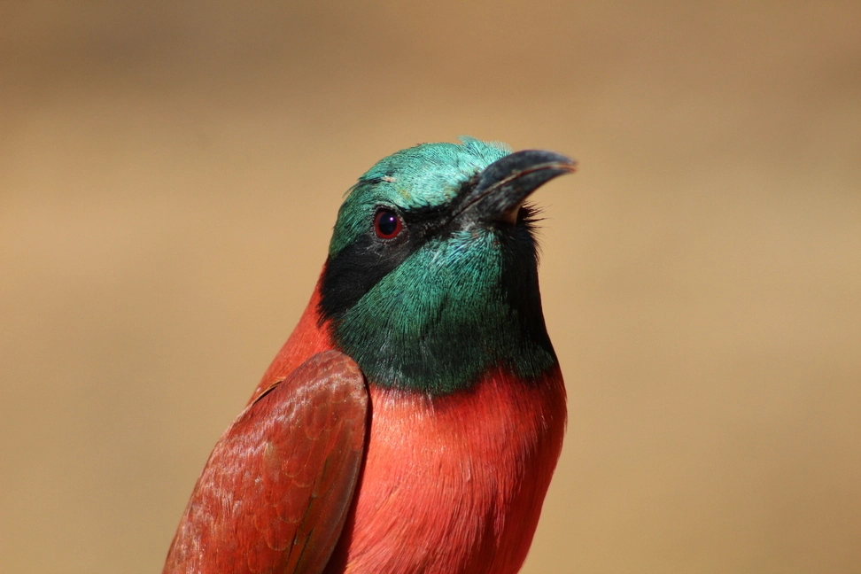
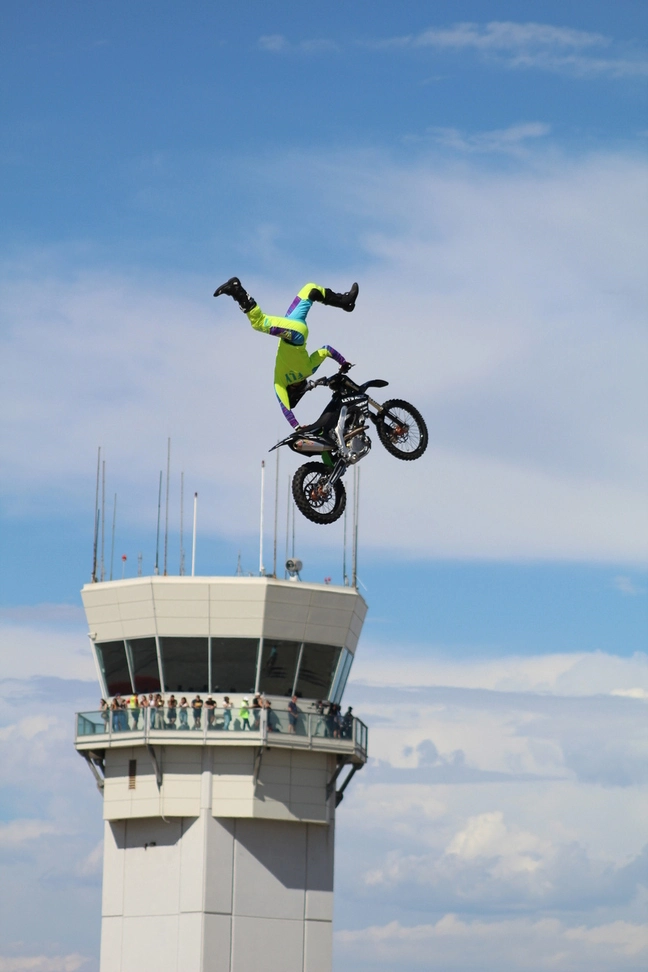

Hi, my name is
Marc Baeuerle.
I'm a student who enjoys creating products and learning new things. When I'm not busy with school or working on my projects, you'll find me fiddling around with my camera.
About me
Hello! My name is Marc and I study Mathematics-Computer science at UCSD. Being very interested in the visual aspects of life, I like to experiment with the ways in which we present content on the internet and take a liking in manipulating images through photoshop or tinkering with my dslr. This has lead me to my endevours of discovering the possibilities that come with front-end development.
Here are some of my upcoming projects that will be available soon.
-
Spotify App
This is spotify app that tracks your favourite songs using Spotify's API
Technologies used: SpotifyAPI, NodeJS, Express, React
-
A* Pathfinder
This is an experiment at using C++ to display the popular pathfinding alorithm.
Technologies used: HTML, CSS, javascript, C++
My photographs
- 
-

- 